IDT - IDT Broker
Powered by

| Project Links |
|---|
| Software GitHub Repository https://github.com/ds2-eu/idt.git |
| Progress GitHub Project https://github.com/orgs/ds2-eu/projects/3 |
General Description
IDT is the core enabler of DS2 who purpose is to be deployed in front of participants data source/spaces and network connected to any other IDT-enabled data source. As such its aim is to run all DS2 modules, including the DS2 Connector, the core module for Inter-Dataspace communication and data transfer, and the Containerisation module for DS2 module deployment. The IDT contains the core Kubernetes runtime to run all containerised modules and a series of additional open-source software for module management.
The IDT contains the Kubernetes runtime that is the core service to run all modules in a containerised way. Those modules descriptors are uploaded to the DS2 Portal Marketplace and then, using the IDT Kubernetes UI, are deployed to the Kubernetes runtime. The Containerisation module kicks-in and then converts those module descriptors to full module charts effectively deploying the DS2 modules. The Kubernetes UI, alongside the Management and Monitoring Controller, will be used to manage and monitor all DS modules running on a participants IDT. Additional services will also be run as part of the IDT such as certificate management, ingress network traffic management using traditional ingress controllers with ingress resources to expose modules and eventually transitioning to service mesh and gateway API, storage management and possibly other useful open-source tools. The other key component of the IDT is the DS2 Connector used for Dataspace like communications following current IDSA and Gaia-X standards. An additional IDT UI will be provided for module navigation and Connector management.
Architecture
The figure below represents the module fit into the DS-DS environment.
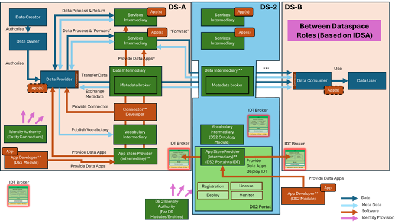
The figure below represents the actors, internal structure, primary sub-components, primary DS2 module interfaces, and primary other interfaces of the module.
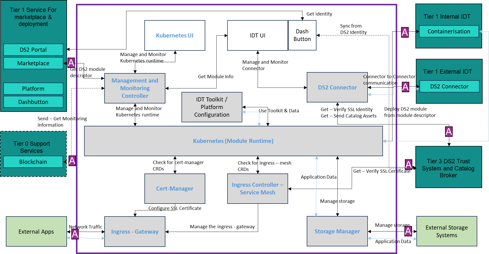
Component Definition
This module has the following subcomponent and other functions:
-
Kubernetes (Module Runtime): Kubernetes is the leading technology in container orchestration and the choice and key component of the IDT for deployment and integration of the DS2 modules. This is the core IDT subcomponent that runs and orchestrates the DS2 modules and all the other IDT subcomponents, as containers. This is Open-Source software and the current distribution being used is K3s, a lightweight version of Kubernetes easy to install, half the memory, all in a binary, in less than 100 MB among other enhancements. One of the main advantages is the flexibility of installation, since it can be deployed at a participant edge, onPremise, InCloud, etc.
-
Kubernetes UI: The Kubernetes UI is open-source software based on Rancher that allows to install and manage Kubernetes in a more user-friendly way both onPremise and InCloud. The Kubernetes UI will provide the management interface for platform administrators to manage the Kubernetes cluster and resources running on top of it. The Kubernetes UI will also provide the monitoring interface to the IDT Kubernetes subcomponent and the DS2 modules.
-
Management and Monitoring Controller: This is the main interface from the Kubernetes UI to the Kubernetes subcomponent and also for external integrations. The Management and Monitoring Controller is open-source software based on the Kubernetes and Rancher API and the Rancher agents. It is used as the primary interface to the IDT Kubernetes subcomponent for cluster management. It will also be used as the primary interface for monitoring which will potentially be integrated with the DRM Blockchain module for traceability. In addition, further research on using other modules for monitoring such as Prometheus-Grafana will be conducted for enhanced monitoring.
-
Ingress – Gateway: The ingress or gateway resource provides the entry point to the IDT Kubernetes subcomponent via the Ingress controller, thus, the IDT network, for all network traffic from external apps, being an external app, any system external to the IDT. It describes how the DS2 modules are exposed outside of the IDT. Initially the modules will use a Kubernetes Ingress resource to expose the modules but further research will be conducted to examine the use of the Gateway API and Service Mesh technology.
-
Ingress Controller – Service Mesh: Based on Open Source, the Ingress Controller is the Kubernetes controller dealing with Ingress resources, that is, managing the entry point to the IDT and how the DS2 modules are exposed outside of IDT. Further research is expected for replacement of the Ingress Controller with Service Mesh technology and the Kubernetes Gateway API, that adds a transparent layer to provide the IDT with enhanced connectivity, security, control and observability. The use of the Service Mesh could also be a key feature for using more secure communication via mutual TLS protocol (mTLS) in all DS2 communications which provides and additional trust layer. This could also be integrated with the DS2 trust and identity system.
-
Storage Manager: Open-source software to provide the interface between the IDT Kubernetes subcomponent and the physical storage for DS2 stateful modules. This will use Kubernetes native storage technology to allow highly available stateful module deployments in IDT. When data from DS2 modules need to be persisted in a participant backend storage system, the Storage Manager will be used to map current deployment and Kubernetes Persistent Volumes to external storage systems. This is not a storage system or technology for modules… If DS2 modules need to use storage, the DS2 modules need to provide them by packaging them in their module Chart.
-
CertManager: Based on Open-source software, it provides management of SSL certificates for secure connectivity ie. HTTPS, with verified signed certificates using Let’s Encrypt CertificateAuthority (CA) and configures them for the Ingress or Gateway resource. The CertManager integrates with the Ingress Controller and/or Service Mesh subcomponents and in addition, further research on integration with DS2 Trust system will be explored.
-
DS2 Connector: The DS2 Connector in the IDT is the key element that will allow for DS2 transactions and data exchange, following the IDSA and Gaia-X standards. The Open-source Eclipse EDC Connector and the necessary components (control plane, data plane …) will be used to provide interoperability between Dataspaces and secure, trustworthy exchange of data. Following existing Dataspace principles and protocols, the DS2 Connector will use the DS2 Trust system for identity management and will connect to other participants IDT DS2 Connectors in other Dataspaces for data exchange. The Connector will also integrate with the DS2 Catalog or a Dataspace level Metadata Broker for participant and data discovery.
-
IDT UI: This is the main interface for the IDT from the user point of view. The interface is actually two interfaces, one is the Participant Portal, which is a local version of the DS2 Portal and displays the list of modules running in an IDT and user and role management. The other is a more Connector focused UI, with Connector configuration and management features.
-
IDT Toolkit / Platform Configuration: This is a toolkit box where common tools will be deployed for use by the modules, including platform configuration to be used mainly by the Containerisation module and the Chart templates, but also can be used by other modules. The first tool in the box will be an email server to be used by modules.
-
Tier 0 Support Service Stack:
- DRM and API: For further exploration integration of the monitoring controller with the Blockchain will be considered.
-
Tier 1 Service Stack for Marketplace and deployment and API: The full stack will be implemented as generically described elsewhere in this document. Exceptions: The IDT uses the DS2 Portal and Marketplace to retrieve the ChartDescriptors of modules and deploy them via the Kubernetes UI. Then the Containerisation module uses the descriptors to deploy the full module Helm Chart. In addition, The DS2 Connector in the IDT integrates with other IDT DS2 Connectors for data exchange.
-
Tier 3 Trust Stack and Catalog and API: The IDT will make use of the relevant parts of the DS2 Trust Stack for certificates in the Ingress Controller – Service Mesh and identities in the DS2 Connector. The IDT will also connect via the DS2 Connector to the Catalog.
-
External Apps: External Apps refer to any software application external to the IDT and DS2 ecosystem that uses the DS2 Connector in the IDT for any DS2 data transaction. It’s the application that can trigger a data exchange via the Connector, either as a consumer or producer.
-
External Storage Systems: This refers to any external storage system, physical or software defined, that a participant has already in place and where data from the IDT and DS2 ecosystem can be persisted, thus, is mapped via the Storage Manager into the IDT Kubernetes
Screenshots
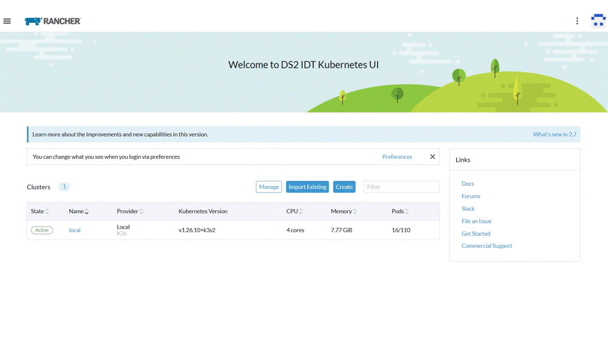
Commercial Information
| Organisation (s) | License Nature | License | Marketplace Link |
|---|---|---|---|
| ICE | Open Source | Apache 2.0 | idt |
Top Features
- Kubernetes Platform: The IDT provides a Kubernetes based platform for ease of integration and deployment of the modules
- Flexible Installation Process: The IDT provides a user friendly installation process for easy installation to non-experienced users. In any case, management of the platform itself, will require some expertise. In addition, it supports different installation modes from on-cloud to on-prem and edge.
- Management Interface: A Rancher based UI is provided for the Kubernetes cluster management. Management of Kubernetes itself will require some expertise. The Management UI provides the interface and API for module management : deployment, deletion, upgrade
- Monitoring of Platfom and Apps: Provides the interface and API to monitor the cluster itself and the modules using Rancher UI
- Seamless Integration with Containerisation Deployment: IDT integrates seamlessly with the Containerisation module for ease of module deployment
- Networking: Provides secure networking and connectivity among the installed apps and to and from outside the cluster
- Log management: Ability to retrieve module logs for troubleshooting and debugging
- Native Storage: Provides Kubernetes native storage for stateful applications
- IDT UI: Provides the DLM UI as the entry point to the IDT, single sign on and module navigation which includes all the IDT core module links: containerisation, localcatalog, dlm, credentialmanager and dlmstore
- DS2 Connector: The IDT incorporates the DS2 Connector for DS2 data exchange
How To Install
The IDT installs a pre-packaged enterprise ready Kubernetes cluster along with some extra features for management and deployment.
Requirements
Provision a Linux Node or VM (Ubuntu 18.04, 20.04, 22.04)
The VM has to be run on top of AMD architectures ie. don't run a vm on a mac host machine since typically module images won't support arm architectures
Resources:
Kubernetes Node
- Minimum: 2 cpu cores, 4 GB RAM and 10 GB disk capacity.
- Recommended: 4 cpu cores, 8 GB RAM and 50 GB disk capacity.
- Recommended when installgin idt core bundle: 8 cpu cores, 16 GB RAM and 100 GB disk capacity
These numbers may change since a number of IDT components will be deployed, check specific requirements for specific components.
Software
IDT installs these software utilities and specific tested compatible versions:
- Docker
- K3s (Kubernetes)
- Helm
- Cert-manager
- Rancher
- Creates signed certificates to use by the ingress controller from various providers (digitalocean, cloudflare), from files or self signed
- Nginx Ingress Controller
- Nginx docker (load balancer - optional)
- DS2 Connector
- Core DS2 modules
DS2 Installation
The DS2 Installation of IDT includes not only the IDT itself but the installation of all core modules
Summary of installation steps
- Purchase the IDT Core bundle
- From the purchased bundle, download the idtinstaller module
- Unzip and untar the installer in the VM to be installed
- Configure the installation
- Run the installer
Detailed Steps
-
Purchase the IDT Core bundle from the DS2 Marketplace at Marketplace . This includes the "idtinstaller" and all the core modules
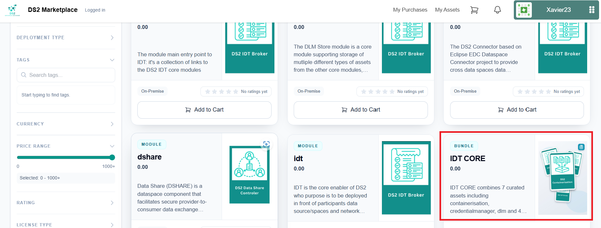
-
From the purchased bundle, download and copy the idtinstaller module to the VM where the IDT is going to be installed.
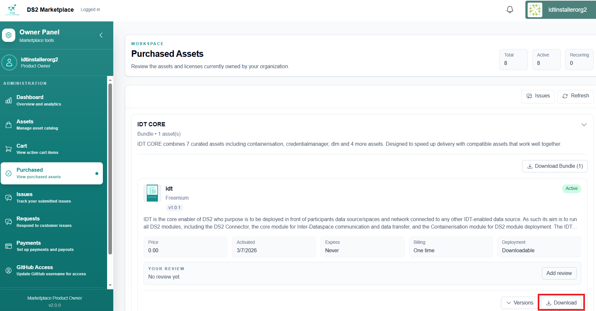
-
The idtinstaller is a tar.gz file which is packaged as a zip file for the Marketplace. First unzip the zip file and then untar the tar file
-
Once the installer is unpacked, navigate to the idtinstaller folder and edit the global.yaml file to configure the installation
where the parameters are# idt params nodeip: 192.168.50.241 iface: eth0 idt_domain: ybeer.ds2.icelab.cloud custom_ssl: 1 issuer: digitalocean # cont params githubuser: githubtoken: organisation: myorganisation # connector connectorversion: ds2connectorv24paenodeip: ip of the node where idt is being installed
iface: the network interface of the ip
idt_domain: the domain as configured in the Portal
custom_ssl: optional parameter to create the ssl certificates for the idt domain with values 0, 1 and 2. * 0: the installer creates a self-signed certificate for the domain * 1: the installer creates a valid let's encrypt signed certificate for an exisiting domain using the dns challenge. If this option is selected, the parameter issuer needs to be added to the yaml file with the name of the dns server that hosts the domain. Supported issuers so far are: * cloudflare
Edit the /idtinstaller/minids23.0/issuers/cloudflare-secret.yaml and add your cloudflare API token api-token: API Token * digitalocean Edit the /idtinstaller/minids23.0/issuers/digitalocean-secret.yaml and add your digitalocean access token base64 encoded ie. echo -n $accesstoken | base64 access-token: “Acess Token” * 2: the installer creates a secret based on an existing valid signed certificate owned by the user. If this option is selected, the parameters public_key and private_key need to be added to the yaml file with the path to the crt and key files of the certificate. ```yaml custom_ssl: 2 public_key: idt.crt private_key: idt.key githubuser: the github username as configured in the Portalgithubtoken: create a githubtoken for the github user with pull permissions from the repo. It will be used to pull charts and images for the modules
organisation: the organisation registered in the portal
connectorversion: leave as it is
-
Run the installer from the idtinstaller folder. The installer will install the IDT and all the core modules acquired with the Marketplace core bundle: IDT, Containerisation, Connector, DLM, LCAT, CredManager, DLM Store
- Access the Portal and navigate via DashButton to Containerisation module
- Refresh the GitHub repository to refresh all installed modules
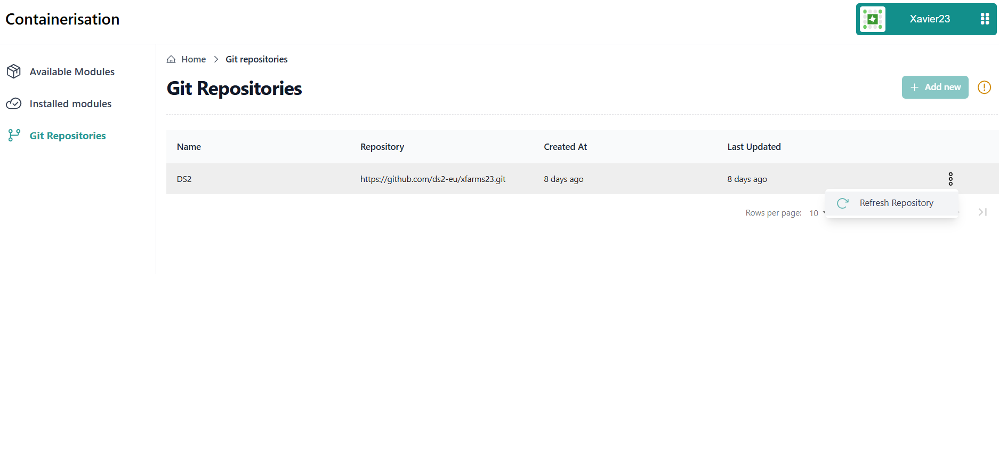
- Navigate to all core modules via DashButton or DLM
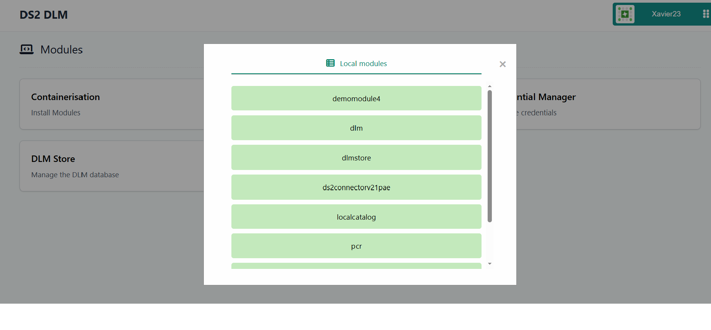
Update existing installation without re-installting Kubernetes and Flux
Update existing installation reinstalling everything
Standalone Installation
Summary of installation steps
- Clone the repo
- Deploy IDT
- Create the parameters yaml file
- Run the command minids23.1.sh as per instructions. This deploys the Kubernetes platform
- Access Rancher at https://rancher.$nodeip.ds2.sslip.io where $nodeip uses '-' instead of '.' (The domain can be changed if needed)
-
- If http access is needed, run patch_nginx.sh
- Deploy IDT modules from the Rancher UI (Using Containerisation module at a later stage)
- Any script required before deploying any component should be in the idt/modules folder
- Upon deployment of first module import the self-signed certificate in the trusted CA's store
Detailed steps
-
Clone the repository
-
Navigate to idt folder
-
Create the parameters file minids2.yaml with this parameters:
nodeip: the ip of the vm where idt and k3s will be installed ie. 192.168.50.10
iface: the network interface of the nodeip ie. enp0s8
idt_domain: optional parameter to configure the domain of the idt and modules that will later be deployed to organisation domain. This domain will usually be public. If not set, the domain defaults to "$ip.idt.ds2.sslip.io" where $ip is the nodeip configured but using '-' between the numbers ie. 192-168-50-10
rancher_domain: optional parameter to configure the Rancher domain to a different domain that the one from the organisation. This domain will usually be private since it has access to the IDT Kubernetes cluster. If not set, the domain defaults to "$ip.ds2.sslip.io" where ip is the same as the idt_domain example.
custom_ssl: optional parameter to create the ssl certificates for the idt domain with values 0, 1 and 2. 0: the installer creates a self-signed certificate for the domain 1: the installer creates a valid let's encrypt signed certificate for an exisiting domain using the dns challenge. If this option is selected, the parameter > issuer needs to be added to the yaml file with the name of the dns server that hosts the domain. Supported issuers so far are: cloudflare 2: the installer creates a secret based on an existing valid signed certificate owned by the user. If this option is selected, the parameters public_key and > private_key need to be added to the yaml file with the path to the crt and key files of the certificate.
An example of a yaml file for issuer type of ssl:
nodeip: 192.168.50.5
iface: enp0s8
idt_domain: idt.myexternaldomain.com
rancher_domain: idt.myinternaldomain.com
custom_ssl: 1
issuer: cloudflare
Another example using existing certificate:
iface: enp0s8
idt_domain: idt.myexternaldomain.com
rancher_domain: idt.myinternaldomain.com
custom_ssl: 2
public_key: idt.crt
private_key: idt.key
-
Run idt
The script will install the software utilities in this order: -
First, IDT installs Docker
-
Then, k3s Kubernetes cluster is installed. Once installed, the installation process will wait and check for K3s to be up and running. Helm is installed together with K3s and kubectl.
-
Next cert-manager is deployed in order to provide a ssl certificate for Rancher. Process will wait and check that cert-manager is running.
-
Then Rancher is deployed in the cluster. Process will wait and check that Rancher is running.
-
Next, the nginx ingress controller is deployed. Before this, a self signed ssl certificate is created using certmanager. Notice that the domain that is configured in the certificate, is the one to be used as domain for the modules when deployed to IDT which defaults to *.$nodeip.modules.ds2.sslip.io . This domain can be changed.
-
An external to Kubernetees nginx server is also run as nginxlb docker image, as the entry point to the cluster, to serve as an external load balancer.
-
DS2 IDT is now ready.
Users can also select which components need to be installed, ie. maybe docker is already installed in the vm, or this is a re-installation, or the nginxlb does not need to be installed. To select the components, create or edit the file minids2.cfg and add remove the components to be installed. If the name of the component is not in the file, that component will be installed, if the name is in the file, that component will not be installed. * docker * k3s * certmanager * rancher * ingress * nginxlb
An example of a file for an installation where docker and nginxlb are not installed:
The IDT is then installed.
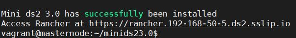
- Access Rancher by accessing the Rancher url in the browser (https://rancher.$nodeip.ds2.sslip.io)
- Once in the Rancher UI, the admin password is set
- Then navigate to the workloads in the system project
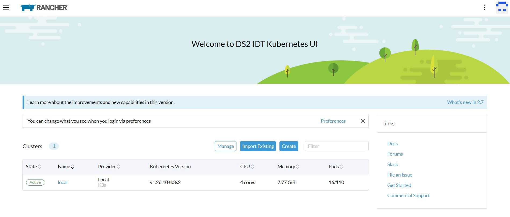
-
The nginx ingress controller is by default set to only accept https connections and redirect to https. In order to use http, run the script patch_nginx.sh which will configure nginx ingress controller to accept http (optional).
-
Now that the cluster is up and running, the Rancher UI can be accessed in order to manage the cluster and install modules.
How To Use
The IDT is mainly the Kubernetes based platform with some extra features and enhancements where all the modules are deployed and managed. So, the how to use in this case is focused first on managing the Kubernetes cluster which is the core of IDT itself and requires some IT expertise. In addition, the DLM module is included which is the entry point to all the core modules in IDT. Some instructions on how to use the DS2 connector will also be included.
Rancher UI
Once the IDT has been installed, the Rancher UI along with the IDT Portal (local Portal) and the core modules (to be done) can be accessed. The Rancher UI is the main entry point for Kubernetes cluster management but won't be used to manage modules since the Containerisation module is the module to install and delete modules from IDT.
-
Inspect the cluster and check number of nodes, resources, etc
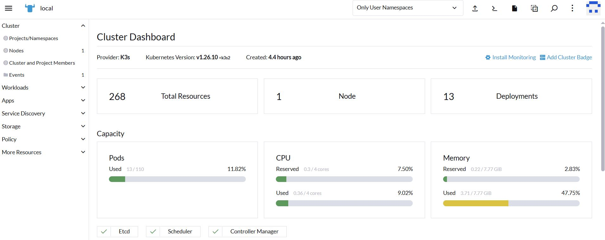
-
Module logs: In order to review the modules logs, navigate to Apps, Installed Apps, and the list of installed modules is displayed. Select the module to be monitored and the list of Kubernees resources of that module are displayed. Select the Deployment and the Pod is displayed. Click on the three dots on the right and select View Logs. The logs of the module are displayed.
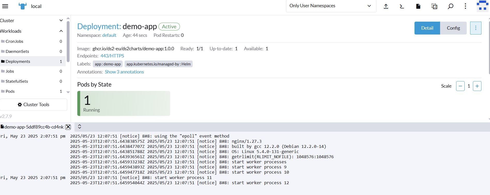
Kubectl commands
Experienced IT users can also use kubectl commands, installed during the IDT installation in order to manage the cluster. Please see the Kubernetes documentation in the additional links section.
DLM
The DLM is a module or sub-module of IDT which is a web application that includes all the links to the core modules running in IDT. * From the dash button, click on modules and click on dlm
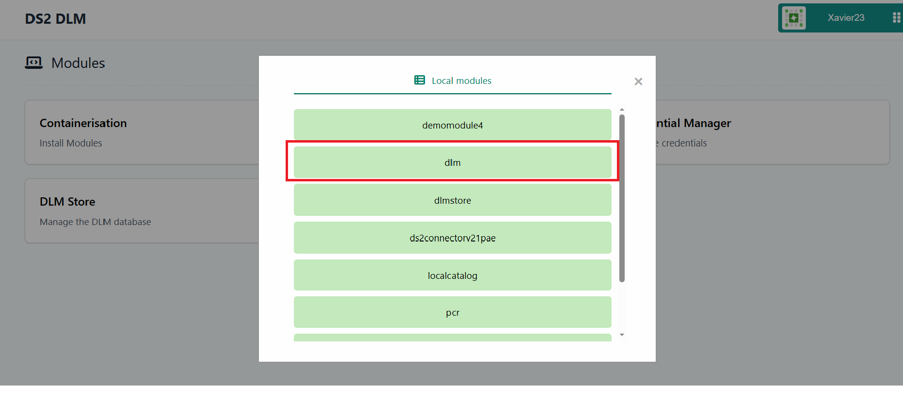
* You will be redirected to the DLM module where you have the available links for the IDT core modules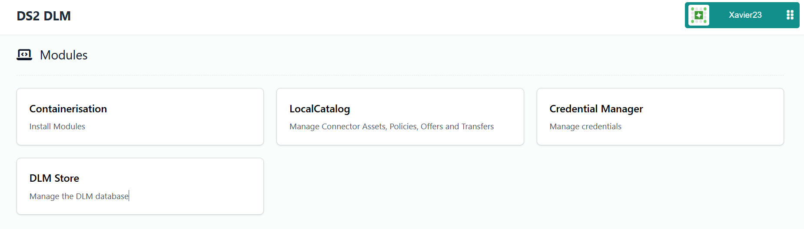
DS2 Connector
Once the IDT is installed, the DS2 Connector is deployed automatically and exposed using the domain selected when installing the IDT. The main module that allows management of the connector ie. creating data assets, policies, data offers, etc. is the LCAT localcatalog module which is a core module deployed with IDT installation. This is the recommended way of managing the DS2 Connector for production, please read the instructions at LCAT.
The DS2 Connector can also be managed via API and included in the idtinstaller package, we have created a set of scritps that allow you to perform some of the basic operations of the connector: 1. Create a data asset 2. Create a policy 3. Create a data offer (contract definition) 4. Fetch a connector catalog 5. Negotiate a contract 6. Transfer data (http push and pull)
Connector Scripts
There are several test scripts to test the use of a connector. The current version of the connector and its API is not secured, so no need to use any token, or user/pass to call teh API. In all cases, the scripts need to be edited to change the URL of the connector.
- Create an asset as a provider: run the script create_asset.sh in order to create an asset in the connector local catalog. You can edit the create-asset.json to change some of the properties.
- Create a policy as a provider: same as the asset, you can create a new policy on the connector. You can edit the create-policy.json to change some of the policy or use it as it is. Then run the create_policy.sh script.
- Create a contract definition as a provider: the contract definition is applied to a policy and an asset or group of assets. You can adapt the create-contract-definition.json to your needs, or if you changed the id of the policy. If not, the contract definition will be applied to all assets using the previous policy. Run the sript create_contract.sh.
- Fetch the provider catalog as a consumer: In this case, you need to use another IDT with another connector as a consumer. You should have at least two IDTs that may represent two dataspaces and can exchange data. Edit the fetch-catalog.json and add the provider connector URL ie. the other IDTs connector URL. Then run the script fetch_catalog.sh with the consumer connector URL. This script retrieves the catalog with the assets that were created at the provider.
- Negotiate a contract: to initiate the negotation of a contract on an asset run the script negotiate_contract.sh with the contract_offer_id as main parameter:
where contract_offer_id is obtained from the previous output of the fetch catalog, at the path dcat:dataset.odrl:hasPolicy.@id
- Getting the contract agreement id: the previous call returns the id of the on-going contract negotiation. To check the status of the negotiation, run the script get_contract.sh with parameter contract_id:
where contract_id is obtained from the id of output of the previous script.
The state of the output of get_contract should be FINALIZED if the contract negotiation is successful
These scripts and steps have been developed following the steps at the EDC Transfer Samples with all the details at https://github.com/eclipse-edc/Samples/blob/main/transfer/transfer-01-negotiation/README.md
Now a transfer can be started. Since the sample transfer is using a Provider Push, there are some prerequisites such as running an http server etc. For this, please follow steps at https://github.com/eclipse-edc/Samples/blob/main/transfer/transfer-02-provider-push/README.md. There are some scripts that have been developed for this in the IDT: start_transfer.sh, start-transfer.json.template, check_transfer.sh .
As a quick summary:
- Build and run an http server from the EDC Samples repository
- Run the start_transfer.sh script at the IDT repository using the contract_agreement_id from the previous step
where contract_agreement_id is obtained as output from the get_contract.sh script
- Check the status of the transfer with check_transfer.sh and parameter transfer_id from the output of the start_transfer step
where transfer_id is obtained as output from start_transfer.sh script
The DS2 Connector API can be used to perform custom integrations and transfers.
TBD: the Connector swagger API.
Connector Scripts v21
With the release of ds2connectorv21, scripts from previous version have been updated to support the new connector and apis. The scripts can be found in the IDT repository at https://github.com/ds2-eu/idt.git in the /ds2connectorv21scripts folder.
The steps are still the same as in the previous version with additional transfer processes: * Create an asset as a provider * Create a policy as a provider * Create a contract definition (data offer) as a provider * Fetch the catalog as a consumer * Negotiate a contract as a consumer * Start data transfer pull or push as a consumer
The scripts used some input parameters to create the different payloads needed for the request, but users can customize the payloads and run the requests standalone without the scripts ie. using curl or postman or integrating the calls in an application.
Create the asset, policies and contract definitions as a consumer
- Create an asset: Run the create_asset.sh with $mydomain as parameter where $mydomain is the domain used when installing IDT.
You can edit the assetId and the baseUrl of the asset in the create-asset.json file
Run the script: Sample output:
{ "@context": { "@vocab": "https://w3id.org/edc/v0.0.1/ns/" }, "@id": "assetId", --> Edit this "properties": { "name": "product description", "contenttype": "application/json" }, "dataAddress": { "type": "HttpData", "name": "Test asset", "baseUrl": "https://jsonplaceholder.typicode.com/users", --> Edit this "proxyPath": "true" } } - Create a policy: You can edit the policy id in the create-policy.json file.
The permission, prohibition and obligation can also be edited to enhance the policy.
Examples of this will be provided in a later release where connector will be integrated with PAE and other credentials.
Run the script:
{ "@context": { "@vocab": "https://w3id.org/edc/v0.0.1/ns/", "odrl": "http://www.w3.org/ns/odrl/2/" }, "@id": "aPolicy", --> Edit this "policy": { "@context": "http://www.w3.org/ns/odrl.jsonld", "@type": "Set", "permission": [], "prohibition": [], "obligation": [] } }
Sample output: - Create a contract definition (data offer). You can edit the create-contract-definition.json file to change the contract definition id, asset selector and the policy. In this example the asset selector will select all assets created and the policy used is the policy created in the previous command aPolicy.
Run the script:
Sample output:{
"@type": "IdResponse",
"@id": "1",
"createdAt": 1773227372361,
"@context": {
"@vocab": "https://w3id.org/edc/v0.0.1/ns/",
"edc": "https://w3id.org/edc/v0.0.1/ns/",
"odrl": "http://www.w3.org/ns/odrl/2/"
}
}
Fetch the Catalog and Negotiate the Contract as a provider
- Fetch the Catalog: to fetch the catalog as a consumer you need to query your control plane agains the provider control plane.
Run the script:
where $providerdomain is the provider connector domain and mydomain is my connector domain if we want to query the catalog from ds2controlplane.domainA.com and our connector is ds2controlplane.domainB.com, you need to run ./fetch_catalog.sh domainA.com domainB.com
Sample output:
{
"@id": "86d784cf-bbf4-44ec-b7be-c3e5a68510d0",
"@type": "dcat:Catalog",
"dcat:dataset": {
"@id": "assetId",
"@type": "dcat:Dataset",
"odrl:hasPolicy": {
"@id": "MQ==:YXNzZXRJZA==:ZDQ2NzdjZDYtYzExOS00YjE4LTkwYzUtZTU1MzllYjY1YjRk",
"@type": "odrl:Offer",
"odrl:permission": [],
"odrl:prohibition": [],
"odrl:obligation": []
},
"dcat:distribution": [
{
"@type": "dcat:Distribution",
"dct:format": {
"@id": "HttpData-PULL"
},
"dcat:accessService": {
"@id": "ba6c43bf-ce54-42d3-9273-9e2b27e89fac",
"@type": "dcat:DataService",
"dcat:endpointDescription": "dspace:connector",
"dcat:endpointURL": "https://ds2controlplane.idtb.ds2.icelab.cloud/api/dsp"
}
},
{
"@type": "dcat:Distribution",
"dct:format": {
"@id": "HttpData-PUSH"
},
"dcat:accessService": {
"@id": "ba6c43bf-ce54-42d3-9273-9e2b27e89fac",
"@type": "dcat:DataService",
"dcat:endpointDescription": "dspace:connector",
"dcat:endpointURL": "https://ds2controlplane.idtb.ds2.icelab.cloud/api/dsp"
}
}
],
"name": "product description",
"id": "assetId",
"contenttype": "application/json"
},
...
"@id": "assetId",
"@type": "dcat:Dataset",
"odrl:hasPolicy": {
"@id": "MQ==:YXNzZXRJZA==:ZDQ2NzdjZDYtYzExOS00YjE4LTkwYzUtZTU1MzllYjY1YjRk",
You can now try to reach a contract agreement with that provider for that offer id. This is something done by the connector and is an accept the policy defined for the offer or not, there is no negotiation in place.
Run the script:
As an example: ./negotiate_contract.sh domainA.com A "MQ==:YXNzZXRJZA==:ZDQ2NzdjZDYtYzExOS00YjE4LTkwYzUtZTU1MzllYjY1YjRk" domainB.com where A is the name of the provider organisation -> this is used to create the provider did
Sample output:
This is the id of the contract negotation, now it's time to check the status of the contract Run the script:where $negotiationid is the id from the previous step output As an example: ./get_contractagreementid.sh domainB.com c4dc522a-3c21-4cb7-a431-949b8f5bd0e9
Sample output:
{
"@type": "ContractNegotiation",
"@id": "c4dc522a-3c21-4cb7-a431-949b8f5bd0e9",
"type": "CONSUMER",
"protocol": "dataspace-protocol-http",
"state": "FINALIZED",
"counterPartyId": "did:web:ds2identityhub.idtb.ds2.icelab.cloud:idtb",
"counterPartyAddress": "https://ds2controlplane.idtb.ds2.icelab.cloud/api/dsp",
"callbackAddresses": [],
"createdAt": 1773159906921,
"assetId": "assetId",
"contractAgreementId": "5cd3c215-7ce4-4e21-b7e4-f02551e8c528",
"correlationId": "8131f187-a6b3-4ac2-807f-a3d545563ab1",
"@context": {
"@vocab": "https://w3id.org/edc/v0.0.1/ns/",
"edc": "https://w3id.org/edc/v0.0.1/ns/",
"odrl": "http://www.w3.org/ns/odrl/2/"
}
}
Run the Pull Transfer
Run the Push Transfer
Before running the push transfer, users need to have a location where the provider will push the data. For our examples, ds2 includes an http server that can be deployed on the IDT and used as the server where the provider will push the data
To install the http demo server run the same steps to install the new connector, without having to delete any module, for the chart demohttp/ in the containerisation repository. No parameters are needed to install it using Containerisation.
Connector UI
TBD
Other Information
No other information at the moment for IDT
OpenAPI Specification
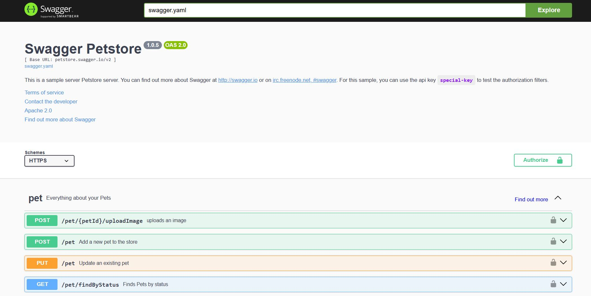
Video Link
Add here video link https://idt
Additional Links
Video https://youtube.com/idt
Kubernetes https://v1-26.docs.kubernetes.io/docs/home/
Helm https://helm.sh/
K3s https://k3s.io/
Rancher https://ranchermanager.docs.rancher.com/v2.7/getting-started/quick-start-guides
EDC Connector https://eclipse-edc.github.io/
Portal Repository https://github.com/ds2-eu/portal (Private Link for Project Members)